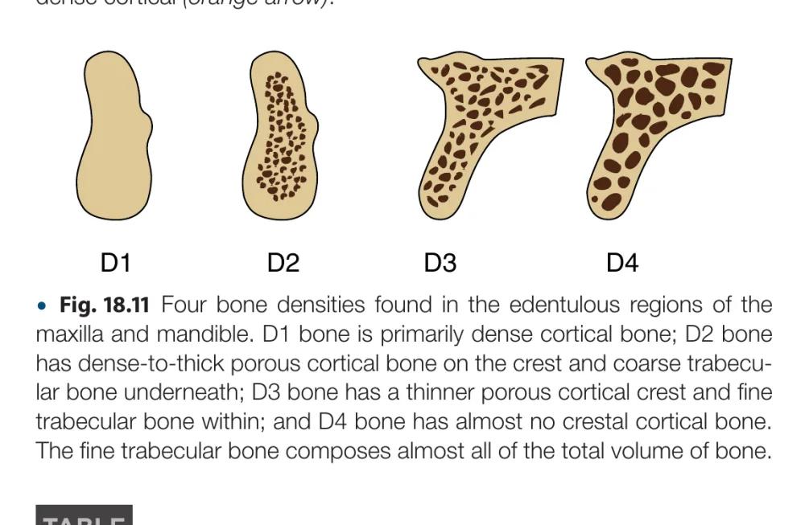
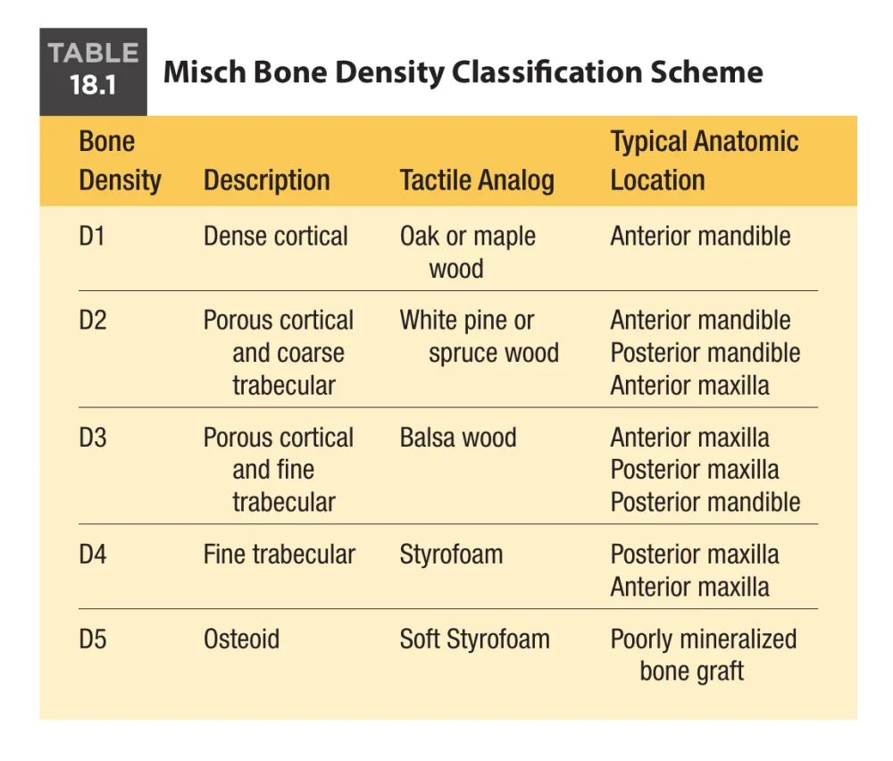

نسخه استخراجشده؛ ترجمه یا تأیید علمی انجام نشده است. وضعیت: captured
در یونیتهای پیش بارها به D1 تا D4 اشاره کردیم. این درس بالاخره آنها را تعریف میکند.
ولی نخست، اصلی که همهچیز را توضیح میدهد: استخوان یک مادهی ثابت نیست؛ محصول نیرویی است که تحمل میکند.
مندیبل، بهعنوان یک ساختار مستقل، «برای جذب نیرو طراحی شده، و بدینسان استخوان کورتیکال متراکمتر و ضخیمتر و استخوان ترابکولار درشتتر میسازد.» ماگزیلا برعکس، نیرو را توزیع میکند و آن را از مغز و اوربیت دور میکند.
و نتیجه: «بنابراین، وقتی دندانها حاضرند، استخوان کورتیکال بیرونی مندیبل متراکمتر و ضخیمتر است، و استخوان ترابکولار درشتتر و متراکمتر است.»
و شواهدی که این را ثابت میکنند و بسیار گویا هستند:
• «کاهش ۱۵ درصدی صفحهی کورتیکال و تحلیل گستردهی استخوان ترابکولار در پی بیحرکتی اندامها بهمدت ۳ ماه.»
• «کاهش ۴۰ درصدی تراکم استخوان کورتیکال و کاهش ۱۲ درصدی تراکم استخوان ترابکولار با عدم استفاده از استخوان.»
• و شاهدی که فراموش نمیکنی: «یک فضانورد در ایستگاه فضایی میر روسیه بهمدت ۱۱۱ روز، نزدیک به ۱۲ درصد مواد معدنی استخوانش را از دست داد.»
پیام روشن است: استخوان بدون بار، ناپدید میشود. و همین توضیح میدهد چرا تراکم استخوان در فک بیدندان کاهش مییابد — نه فقط حجمش.
و آهنگ بازسازی طبیعی: «تقریباً ۱۸ درصد استخوان ترابکولار و ۲ تا ۵ درصد استخوان کورتیکال هر سال بازسازی میشود» در ناحیهی بارگذاری فیزیولوژیک.
و توزیع طبیعی تراکم در فکها:
• «استخوان در اطراف دندانها (لامینا دورا) متراکمترین است، و در کرست متراکمتر از نواحی اطراف اپکسهاست.»
• «ماگزیلا یک صفحهی کورتیکال نازک و استخوان ترابکولار ظریف دارد که دندانها را پشتیبانی میکند» — در مقایسه با مندیبل.
و اکنون طبقهبندی قدیمیتر کیفیت استخوان (کیفیت ۱ تا ۴)، که همه را با یک پروتکل یکسان درمان میکرد:
• کیفیت ۱: «استخوان فشردهی یکنواخت»
• کیفیت ۲: «لایهی ضخیمی از استخوان فشرده که هستهای از استخوان ترابکولار متراکم را در بر گرفته»
• کیفیت ۳: «لایهی نازکی از استخوان کورتیکال که استخوان ترابکولار متراکم با استحکام مطلوب را در بر گرفته»
• کیفیت ۴: «لایهی نازکی از استخوان کورتیکال که هستهای از استخوان ترابکولار کمتراکم را در بر گرفته»
الگو را ببین: از کیفیت ۱ تا ۴، هم لایهی کورتیکال نازکتر میشود و هم مغز ترابکولار کمتراکمتر. تفاوت کیفیت ۲ و ۳ در ضخامت کورتیکال است؛ تفاوت کیفیت ۳ و ۴ در تراکم ترابکولار.
و یک هشدار دربارهی ترمیم استخوان که به بحث بارگذاری مربوط میشود:
«در فرآیند ترمیم، استخوان بافته (woven) ضعیفتر از استخوان لاملار بالغ و مینرالیزه است. بنابراین وقتی استخوان در ناحیهی اضافهبار خفیف بارگذاری میشود، باید احتیاط کرد چون «محدودهی ایمن» استحکام استخوان در طول ترمیم کاهش یافته است.»
و عددی که این را کمّی میکند: «بنابراین اضافهبار پاتولوژیک ممکن است در سطوح میکرواسترین تنها ۱۸ تا ۴۰ درصد استحکام نهایی یا شکست فیزیکی استخوان کورتیکال آغاز شود.»
و اکنون طبقهبندی تراکم D1 تا D4: چهار گروه تراکم استخوان، مستقل از نواحی فکها و بر پایهی ویژگیهای ماکروسکوپیک استخوان کورتیکال و ترابکولار. D1 عمدتاً کورتیکال متراکم است؛ D2 کورتیکال متراکم تا متخلخل در کرست با ترابکولار درشت در زیر آن؛ D3 کورتیکال کرستال نازکتر و متخلخل با ترابکولار ظریف؛ و D4 تقریباً بدون کورتیکال کرستال، با ترابکولار ظریف.
و چهار ساختار ماکروسکوپیک، از کمتراکمترین به متراکمترین: (۱) ترابکولار ظریف، (۲) ترابکولار درشت، (۳) کورتیکال متخلخل، (۴) کورتیکال متراکم.
و مهمترین ابزار عملی این درس — آنالوگ لمسی هر تراکم:
• D1 — کورتیکال متراکم — مانند چوب بلوط یا افرا
• D2 — کورتیکال متخلخل و ترابکولار درشت — مانند چوب کاج سفید یا صنوبر
• D3 — کورتیکال متخلخل و ترابکولار ظریف — مانند چوب بالسا
• D4 — ترابکولار ظریف — مانند یونولیت
این آنالوگها بازیگوشانه به نظر میرسند، ولی نیستند. تراکم استخوان از راههای گوناگون تعیین میشود، از جمله «حس لمسی حین جراحی» — و این فهرست، همان حس را به یک مقیاس قابل انتقال تبدیل میکند. فاصلهی چوب بلوط تا یونولیت را تصور کن؛ این همان فاصلهای است که متهی تو باید تشخیص دهد.
و یک دستهی پنجم که اغلب فراموش میشود:
«یک استخوان بسیار نرم، با مینرالیزاسیون ناقص و فضاهای بینترابکولار بزرگ، ممکن است بهعنوان استخوان D5 توصیف شود. این نوع استخوان بیشتر اوقات استخوان نابالغ در یک گرافت سینوس در حال تکامل است.»
D5 برابر است با استئویید، با آنالوگ لمسی «یونولیت نرم» — و جایگاه معمولش، گرافت استخوانی با مینرالیزاسیون ضعیف است.
این دسته را بشناس، چون دقیقاً همان چیزی است که ممکن است هنگام ورود زودهنگام به یک گرافت سینوس با آن روبهرو شوی.
و حالا پرسشی که همهی این طبقهبندی را توجیه میکند: آیا تراکم واقعاً بر نتیجه اثر میگذارد؟
سه گزارش را، همه با پروتکل استاندارد یکسان، پشت سر هم ببین:
• «۱۰ درصد تفاوت در بقای ایمپلنت میان استخوان کیفیت ۲ و کیفیت ۳، و ۲۲ درصد بقای کمتر در ضعیفترین تراکم استخوان.»
• «۳ درصد شکست در استخوان تیپ III، ولی ۲۸ درصد در استخوان تیپ IV.»
• «۳۶ درصد نرخ شکست در استخوان تیپ IV.»
۳ درصد در برابر ۲۸ درصد. این تقریباً ده برابر است — با همان پروتکل.
و نتیجهی صریح: «روشن است که یک پروتکل استانداردشدهی جراحی، پروتزی و طراحی ایمپلنت، نتایج مشابهی در همهی تراکمهای استخوان به دست نمیدهد.»
و یک هشدار روششناختی که ارزش دارد: «افزون بر این، این گزارشها دربارهی بقای ایمپلنتاند، نه کیفیت سلامت ایمپلنتهای بازمانده.» — یعنی آمار واقعی احتمالاً بدتر از این است، چون ایمپلنتهای زندهی ناسالم شمرده نشدهاند.
ولی خبر خوب هم هست — و همین است که کل رویکرد را میسازد:
برای هر نوع تراکم استخوان، «طرحهای درمان پیشنهادی، طراحی ایمپلنت، پروتکل جراحی، ترمیم و بازههای زمانی بارگذاری تدریجی توصیف شدهاند» و نتیجه این است:
«با پیروی از این رژیم، نرخهای بقای مشابه ایمپلنت برای همهی تراکمهای استخوان مشاهده شده است.»
این جمله را دو بار بخوان. استخوان D4 ذاتاً محکوم به شکست نیست؛ محکوم به شکست است اگر با همان پروتکل D2 درمانش کنی. تفاوت میان ۲۸ درصد شکست و نرخ بقای طبیعی، در انطباق پروتکل است — نه در خودِ استخوان.

این بخش، عملیترین بخش کل یونیت است: پیش از آنکه هیچ تصویری ببینی، چه انتظاری باید داشته باشی؟
D1 — نادرترین:
«استخوان D1 تقریباً هرگز در ماگزیلا مشاهده نمیشود و بهندرت در بیشتر مندیبلها دیده میشود.»
اعدادش: «حدود ۶ درصد مواقع در مندیبل قدامی دیویژن A و ۳ درصد در مندیبل خلفی» — عمدتاً وقتی ایمپلنت صفحهی کورتیکال لینگوال را درگیر میکند.
و یک استثنای مهم: «در حجم استخوان C-h (آتروفی متوسط) در مندیبل قدامی، شیوع استخوان D1 در مردان به ۲۵ درصد نزدیک میشود.»
به این منطق دقت کن: مندیبل C-h حین عملکرد پیچش و خمش بیشتری میان دو فورامن دارد — و این کرنش بیشتر، تراکم استخوان را بالا میبرد.
D2 — شایعترین در مندیبل:
• «مندیبل قدامی تقریباً دو سوم مواقع از استخوان D2 تشکیل شده.»
• «تقریباً نیمی از بیماران استخوان D2 در مندیبل خلفی دارند.»
• «ماگزیلا کمتر از مندیبل استخوان D2 نشان میدهد — تقریباً یکچهارم بیماران»، و بیشتر در ناحیهی قدامی و پرمولر بیمار بخشیبیدندان دیده میشود تا در نواحی مولر بیمار کاملاً بیدندان.
و یک قاعدهی بسیار کاربردی: «دهانههای بخشیبیدندان یکدندانی یا دودندانی در هر دو قوس، تقریباً همیشه استخوان D2 دارند.»
این را نگه دار — چون دقیقاً همان یونیتی است که در ماژول بعد به آن میرسیم (تکدندان). و خبر خوبی است: کوتاهترین دهانهها، بهترین استخوان را دارند. و دلیلش هم روشن است: آن ناحیه تا همین اواخر دندان داشته و بار میگرفته.
D3 — شایعترین در ماگزیلا:
• «بیش از نیمی از بیماران استخوان D3 در قوس بالا دارند.»
• «ماگزیلای قدامی بیدندان تقریباً ۷۵ درصد مواقع استخوان D3 دارد.»
• «تقریباً نیمی از بیماران ماگزیلای خلفی با استخوان D3 دارند» (بیشتر در ناحیهی پرمولر).
• «تقریباً نیمی از مندیبلهای خلفی هم استخوان D3 دارند، در حالی که حدود ۲۵ درصد مندیبلهای قدامی بیدندان استخوان D3 دارند.»
D4 — نرمترین:
• «نرمترین استخوان، D4، بیشتر در ماگزیلای خلفی یافت میشود — تقریباً ۴۰ درصد»، بهویژه در نواحی مولر.
• و عددی که باید پیش از هر لیفت سینوس بدانی: «یا پس از افزایش گرافت سینوس، جایی که تقریباً دو سوم بیماران استخوان D4 دارند.»
• «ماگزیلای قدامی کمتر از ۱۰ درصد مواقع استخوان D4 دارد» — بیشتر پس از گرافت اُنلی کرست ایلیاک.
• «مندیبل در کمتر از ۳ درصد بیماران استخوان D4 نشان میدهد.»
عدد دو سوم پس از گرافت سینوس را دستکم نگیر. یعنی موفقیت جراحی گرافت، تضمینکنندهی کیفیت استخوان حاصل نیست — و طرح بارگذاری باید با آن سازگار شود.
و اکنون جمعبندیای که ارزش حفظ کردن دارد:
«بنابراین طرح درمان اولیه، پیش از اسکن CBCT یا جراحی، پیشنهاد میکند که ماگزیلای قدامی بهعنوان استخوان D3، ماگزیلای خلفی بهعنوان D4، مندیبل قدامی بهعنوان D2، و مندیبل خلفی بهعنوان D3 در نظر گرفته شود.»
این چهار فرض را بهعنوان نقطهی شروع در ذهن داشته باش:
• ماگزیلای قدامی ← D3
• ماگزیلای خلفی ← D4
• مندیبل قدامی ← D2
• مندیبل خلفی ← D3
و به الگویش دقت کن: مندیبل همیشه یک درجه بهتر از ماگزیلای متناظرش است، و خلف همیشه یک درجه بدتر از قدام همان فک. بدترین ناحیهی دهان، ماگزیلای خلفی است — همان جایی که در ماژول ۱ دیدی بیشترین نیرو هم وارد میشود.
این همزمانی، تصادفی نیست و باید تو را نگران کند: بیشترین نیرو در ضعیفترین استخوان. و این دقیقاً موضوع یکی از یونیتهای ماژول بعد است.
و یادت باشد اینها فرضاند، نه تشخیص. اینها برای «طرح درمان اولیه پیش از اسکن» است. تصویربرداری و حس مته حین جراحی، فرض را تأیید یا رد میکنند.
